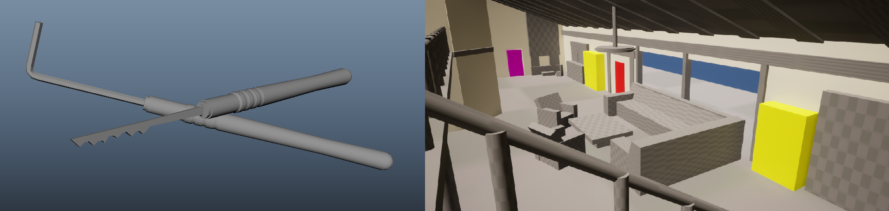
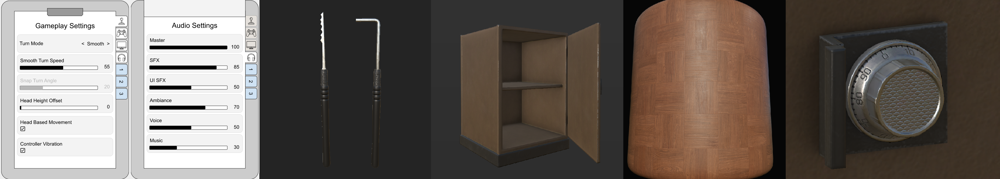

Monday, March 20th
The very first day of our second game project started with us recieving an introduction of the assignment from our supervisors.
Following this lecture, us students moved our workstations around so that we would sit around our team. We then got to work preparing
to present our plan and the game idea for the rest of the school, as well as the sound designers which will assist us during the project.
Systems designer Kevin and myself held a meeting with our programmers and went through the nessecary systems and their order of importance
within the game. During this meeting it was also decided that Viktor would act as programming lead.
The programmers got to work making flowcharts and planning out the structure for programming while waiting to recieve Sony's version of Unreal Engine
and for the dev-kit to arrive.
Meanwhile, Melinda and Emma held a meeting with the Artists where the direction was solidified across the team. They decided on Lucas Andersson Lundvik
as lead environment artist and Oskar Lindahl as lead character and animation artist.
Above is one of the moodboards made by our artists and next to it is a prodecural wood material for use in the game.
Tuesday, March 21st
Day two started with a scrum meeting where the team went through the progress everyone has made and their plan for the day. I then jumped into
reading through the start of our systems documentation, helping our systems designer Kevin out with clarity and scope, as well as overviewing the
overall contents. To his document I also started adding information on the systems needed for UI and UX, my main responsibility for this project.
Melinda, Emma and I then held a meeting together with environment art lead Lucas to establish an idea and workflow for the level, as well as some
constraints and limitations for the specific project. We decided to focus first on one level and then move onto a second or even third one only once
we found ourselves entirely satisfied with the first one. To us, quality was more important than quantity.
During yet another meeting, the entire team was gathered to discuss things like the goal of the project, our mission, and the roles each team member
would fill. We went over the methods we would use to create a well functioning workspace, a positive environment and idea clarity across the group.


Above is a video where some procedural materials made for the game are being showed off in the engine.
Wednesday, March 22nd
On wednesday, I woke up with a terrible migrane, and as a result stayed at home. While at home I did some prep work for the UI, planning out the layouts based on the required functionality. I also did some minor work on the systems design.
A lockpicking kit and a section of the level blockout.
Thursday, 23rd
Day four! I started off the day by fixing up this here dev diary right after our scrum meeting. I set up a page dedicated to the team and it's members which you can find here. I then researched UI from other VR games and continued planning out the structure for menus and such. My plan for this project is to keep as much of the UI diagetic as I reasonably can, to enhance the realistic feel and add to the immersion. All three teams then had a lecture with our supervisors where we recieved information about how to set up the unreal engine version which is compatible with the PS5 and thus the PSVR2. Each team then started setting up their projects and we also recieved a dev kit. Following this, a meeting was held where Lucas, Felicia, Emma, Melinda and myself were present. We discussed the narrative of the game and the gameplay, expanding upon and improving the overall design of each. I also spent a little time helping Melinda work on the level design, and resumed working on menus.
Above you can see, in order from left to right, a mock-up of the diagetic settings menu, the finished lockpicking set, a cabinet, a wooden floorboard material, and a vault lock.
Friday, 24th
Description.